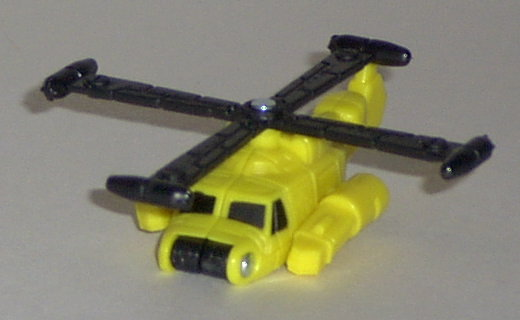
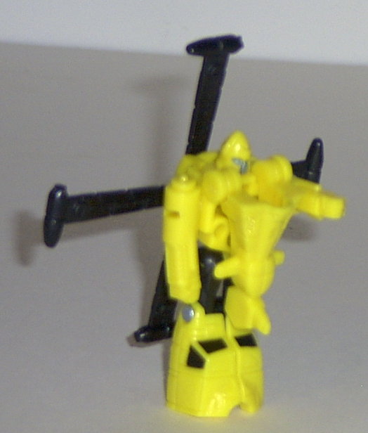
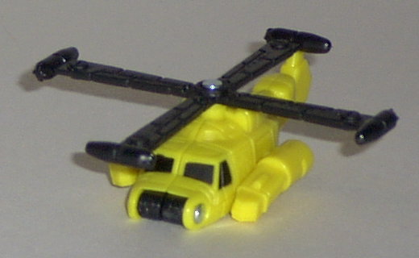
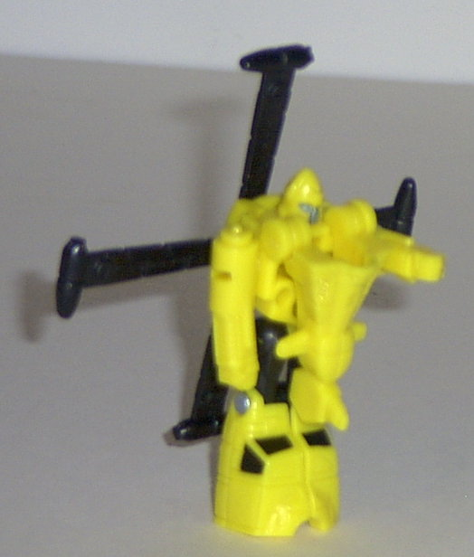
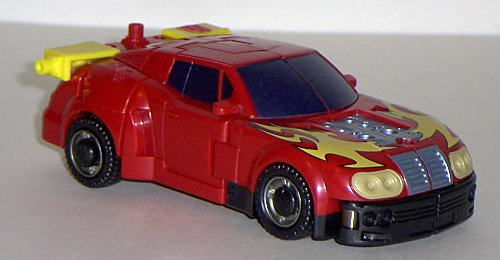
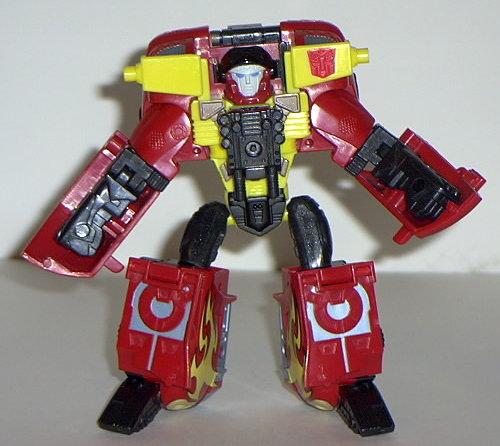

Jolt
(Powerlinx)
Jolt
(Powerlinx)
 
Allegiance : Minicon
Size : Mini-Con
Difficulty of Transformation : Very Easy
Color Scheme : Yellow, black, and some gunmetal gray-blue
Rating : 6.3
(NOTE: Because this set is a repaint, this is not a full-blown review. This mainly covers any changes made to the set and the color scheme, and merely compares it to the original Hot Shot w/ Jolt. For a review on the mold itself, read the review of Armada Hot Shot w/ Jolt here .)
Jolt
(Powerlinx)


Allegiance
: Minicon
Size
: Mini-Con
Difficulty of Transformation
: Very
Easy
Color Scheme
: Yellow, black, and
some gunmetal gray-blue
Rating
: 6.3
This time around, Jolt
sports a yellow-and-black color scheme. It's rather uninspiring, and I'm
not a fan of yellow much either, to say the least. Also, Powerlinx Jolt
has even LESS paint detailing than his previous version- now not even the
side thrusters are painted! This leaves only the helicopter windows and
robot face painted, which is certainly not enough to break up all that
yellow. Spew.
No mold changes have
been made to Powerlinx Jolt.
Powerlinx Jolt isn't
as good as the original version, primarily because of all that danged yellow.
Only two paint apps doesn't help, either.
 Hot
Shot (Powerlinx)
Hot
Shot (Powerlinx)


Allegiance
: Autobot
Size
: Super-Con
Difficulty of Transformation
: Easy
Color Scheme
: Red, yellow, sparkly
black, gunmetal gray-blue, and some gunmetal gray, metallic blue, dull
yellow, chalky off-white, sky blue, and light muddy brown
Powerlinx ports
: 4 (1 gimmicked)
Rating
: 7.1
Powerlinx Hot Shot's
color scheme is obviously reminscent of
Hot
Rod
, the G1 character that became Rodimus Prime after he accepted the
Matrix of Leadership in Transformers: The Movie. (A hint of things to come,
perhaps...?) Well, anyways, it IS certainly not only a nice nod, but appropriate
for the character, seeing how Hot Shot and Hot Rod have similar personalities.
The extra flame decos on the front hood of the car mode look awesome, and
this, combined with his now primarily red-and-black color scheme, is certainly
a lot, LOT more pleasing to the eye than all that horrid yellow of the
previous version. Speaking of yellow, Hot Shot still does have a moderate
amount in his robot mode, as it's practically become his schtick anyways.
It's not enough to bother me, though. The only thing color-wise that I'm
not too crazy about are the tan headlights, which really don't make much
sense to me... If you'll notice, Powerlinx Hot Shot actually does have
a mold change- in robot mode, his face is different. Granted, it's still
the same basic design, but it's not so goofy-happy like it was on the original
version. This time, Hot Shot's more serious and stern. His face proportions
are also much better, and not so darn rounded. Although this does look
much better, it does come at a price- the "race car helmet" visor on his
head can no longer move up and down-- it's fixed into place. Also, part
of his forehead is painted chalky off-white, even though it's clearly not
supposed to be. Hasbro has admitted that this was a factory error. Oops.
Other than the face, no mold changes have been made to Powerlinx Hot Shot.
Powerlinx Hot Shot is
a great improvement over the original version- a much better color scheme,
and an improved face sculpt. And the nod to Hot Rod is appreciated as well.
Although still not near what I'd consider the best of Armada, it's about
as good as this mold is going to get.
No Stats
Review by Beastbot